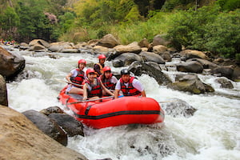

Find Your Adventure
We offer guided rafting trips for every skill level, with adventures ranging from half-day excursions to longer river journeys. Explore our trips and find the adventure that is right for you.


We offer guided rafting trips for every skill level, with adventures ranging from half-day excursions to longer river journeys. Explore our trips and find the adventure that is right for you.

Difficulty: Beginner
Duration: Half day
Fun for the whole family regardless of experience. Take a relaxing trip down a mostly calm river. Guides and equipment are provided.

Difficulty: Intermediate
Duration: One to four days
Your trip starts at our upriver camp with stops along the river at the end of each day. If you choose the whole trip it will take you four days to travel the whole river.

Difficulty: Advanced
Duration: Two or four days
Big Mallard is perfect for the experienced rafter. We have landings at three locations on the river. We have the upriver starting camp and two locations downriver you can exit from.
| Trip | Difficulty | Duration | Minimum Age | Price |
|---|---|---|---|---|
| Half-Day Adventure | Beginner | Half day | 5 | $200 per person |
| Salmon River | Intermediate | One to four days | 8 | Starting at $250 per day, per person |
| Rogue River | Intermediate | Four days | 8 | Starting at $500 per person |
| Big Mallard | Advanced | Two or four days | 12 | Starting at $600 per person |
| Los Dientes del Diablo | Advanced | Five days | 12 | Starting at $800 per person |
Trips are filling up fast!
Reserve Your Spot Now